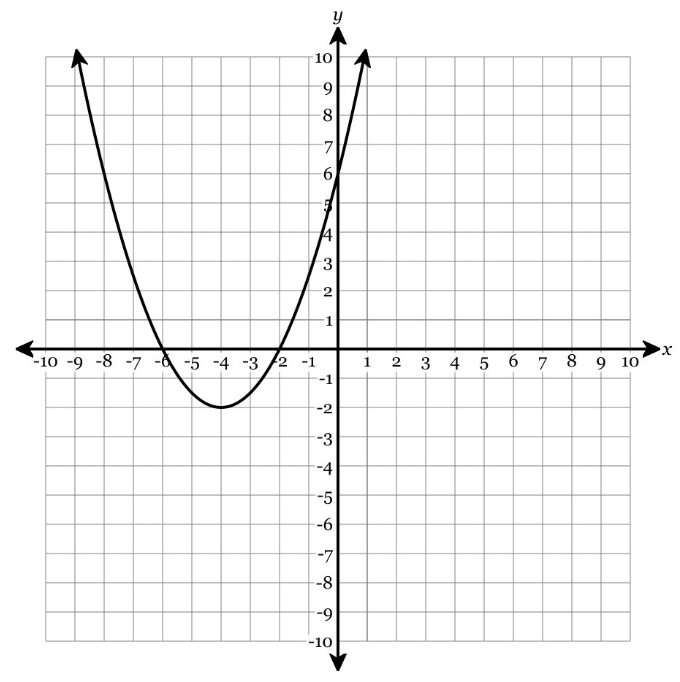
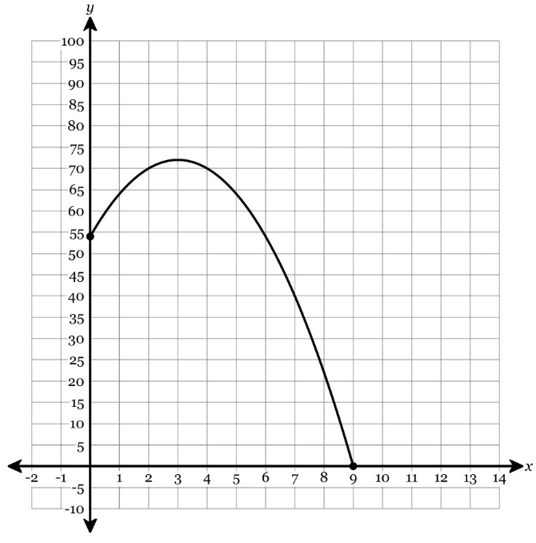
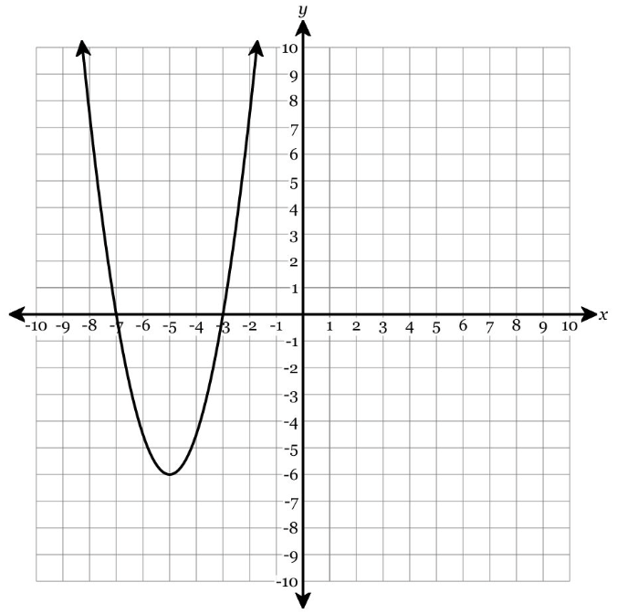

Show work and mark answers clearly.
1.
Graph \(y=(x-2)^2-4\) on the coordinate plane. Then identify the vertex, axis of symmetry, x-intercepts, y-intercept, and range.

Show work and mark answers clearly.
1.
Graph \(y=-x^2+4x+5\). Use standard-form features to help you.

- Find the axis of symmetry.
- Find the vertex.
- Identify intercepts.
- State the range.
Show work and mark answers clearly.
1.
Use a table to prepare a graph of \(y=\frac12(x+2)^2-3\). Then identify the key features.
| \(x\) | \(-4\) | \(-3\) | \(-2\) | \(-1\) | \(0\) |
|---|
| \(y\) | | | | | |
|---|
- Mark the vertex and axis of symmetry.
- State the range.
- Explain how symmetry helps complete the graph.
Show work and mark answers clearly.
1.
The graph below is missing labels. Use it with the equation \(y=-2(x+1)^2+8\).

- Label the vertex and axis of symmetry.
- Identify the maximum value.
- State the range.
- Explain how the value of \(a\) affects the graph.
Show work and mark answers clearly.
1.
Graph both functions on the same coordinate plane and compare them.
\(f(x)=x^2\) and \(g(x)=2(x-3)^2+1\)
- Identify the transformation from \(f\) to \(g\).
- State the vertex and range of \(g\).
- Describe how the stretch changes the graph.
Show work and mark answers clearly.
1.
Use the graph to check the equation \(y=x^2-4x-5\).

- Find the vertex from the equation.
- Find the intercepts from the equation.
- Mark which features match the graph.
- State one feature that is easier to see graphically and one easier to find algebraically.